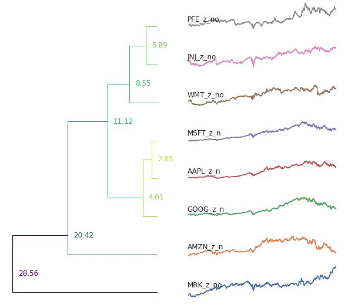
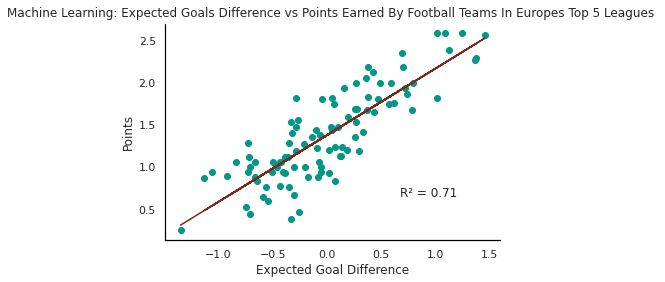

My first chart looks at inflation in the US
The second chart tracks Unemployment level for people 16+
The third chart tracks IMF credit outstanding between the years 1984 and 2022
The third chart tracks IMF credit outstanding between the years 1984 and 2022, adjusted by GDP
This chart shows that 1984 was the riskiest year as IMF Lending outstanding was the greatest as a percentage of World GDP.
This bar chart shows the Daily Gilt Strip Yields as they mature until 2050
This Chart shows the same results but this chart makes it clearer to see the trend in Daily Gilt Strip Yields
I chose to scrape this chart as I was unable to access any csv link to the data and so scraping it got around that issue.
A link to the python notebook where I scraped the data is here.
A link to the python notebook where I implemented my python looper is here.
World Map
Chloropleth Map:
Global Fertility Rates. It appears by looking at the map, the countries in Africa have the highest fertility rates and areas such as europe have lot lower rates of fertility.
During the talk it was discussed that food prices are increasing, the graphs below indeed show this as one of the graphs indeed shows food inflation to be increasing. The second graphs show how the crisis affects the poorest the most as over half of all adults in the most deprived areas of England reported spending less on their food shopping and essentials because of increases in the cost of living. The graphs therefore do show that a Food crisis is currently occuring and steps needed to be taken to prevent it
Scatter Graph and Line Graph with Embedded OLS Line of Best Fit
A link to the python notebook where I scraped, cleaned and modified that data used to produce the scatter graph is here.
My hypothesis was that retail, technology and medicine industries are quite closely related due to medical equipment and technology being sold to retailers. The results show that the medical firms are much closely related to retailers than technology and in their own respective fields, the stock prices are very similiar
A link to the python notebook where I performed my data analysis and time series cluster is here.
.
My hypothesis is that the team that has the most shots per game are more likely to score and win a football match. The chart shows the results of the regression with a strong relationship between expected goals difference and point earned for teams in europes top 5 leagues. The regression supports this as the R^2 value is 0.71. A link to the python notebook where I performed my data analysis is here.
